地政学
コペンハーゲンはデンマークの首都で、王室、議会、官庁、大使館、北欧協力の窓口が集まります。海峡の位置はバルト海と北海を結び、橋を越える通勤圏も外交と経済を日常へ近づけています。報道と市民運動も近い街です。

🇩🇰 デンマーク / ヨーロッパ / World City Atlas
王室と議会、港湾と海運、福祉国家の日常、自転車と水辺の設計が近距離に重なる北欧の首都です。小さな都市圏に、気候適応、住宅、移民、デザイン、食の課題が凝縮されています。
都市の骨格
コペンハーゲンはシェラン島とアマー島をまたぎ、エーレスンド海峡を介してスウェーデンのマルメと結びます。港と自転車道、地下鉄、王宮、議会、大学、住宅地が水辺を囲むように連続します。
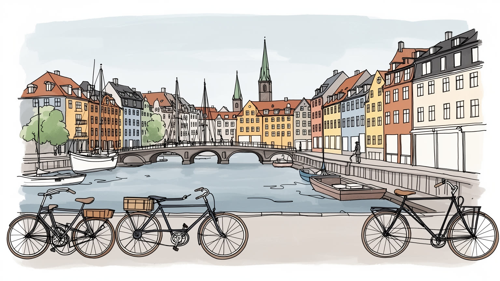
コペンハーゲンはデンマークの首都で、王室、議会、官庁、大使館、北欧協力の窓口が集まります。海峡の位置はバルト海と北海を結び、橋を越える通勤圏も外交と経済を日常へ近づけています。報道と市民運動も近い街です。
港湾、海運、製薬、設計、大学、公共部門、観光が都市経済を支えます。高技能職だけでなく、清掃、介護、飲食、港湾、建設、配送の労働も厚く、福祉国家の生活水準を現場から支える都市です。賃金交渉も街の基盤です。
ルーテル派の教会と王室儀礼に加え、ムスリム、カトリック、ユダヤ系の礼拝も日常にあります。家具、建築、映画、食、童話の記憶は、簡素さと公共性を重んじる文化として街に残ります。Jazz Festival、Pride、サッカーの熱も街に響きます。
水辺、広場、自転車道、公園、港の遊泳場が日常と観光を近づけます。一方で家賃上昇、学生住宅、移民の統合、冬の暗さ、気候対策は重い課題です。快適さの裏側も読むべき首都です。港の泳ぎ場や夜市も余白です。
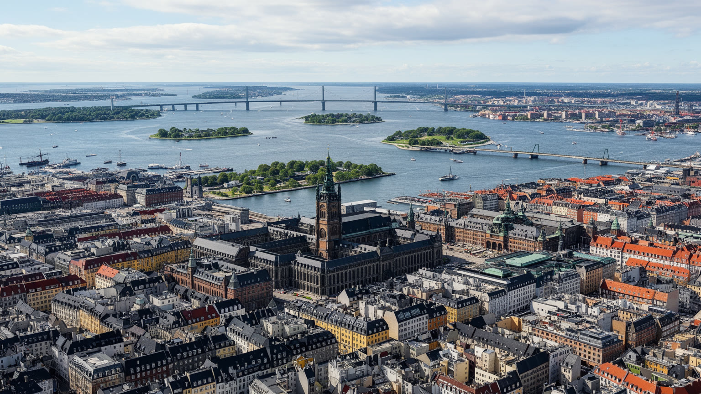
コペンハーゲンは、デンマークの国家制度が港町の地形に重なる首都です。王宮、国会、首相府、官庁、大使館、最高裁、報道機関が中心部の比較的狭い範囲に集まり、君主制の儀礼と議会民主主義の実務が同じ街路で見えます。クリスチャンスボー城はかつての王権の場所であり、現在は議会と政府の象徴でもあります。都市の位置は内向きではありません。エーレスンド海峡を挟んでスウェーデンのマルメと向かい合い、橋と鉄道で日常の通勤圏が国境を越えます。バルト海、北海、北欧、欧州連合、NATOを結ぶ政治的な接点でもあり、デンマークの小さな国土以上に大きな外交的意味を持ちます。コペンハーゲンの首都性は威圧的な大通りよりも、水辺の広場、警備の穏やかさ、儀礼の日の交通規制、市民の抗議、国際会議の動線として現れます。国家の中心が生活の距離に近いことが、この都市の特徴です。小国の首都であるため、中央政府、地方自治、研究機関、企業、市民団体の距離も近く、政策の実験が都市空間へ反映されやすい面があります。移民、気候、福祉、交通をめぐる議論は、国政の抽象論であると同時に、近所の学校、住宅、広場、自転車道の使い方として経験されます。海峡を越える地域連携は、首都を国境で閉じない発想も育てます。都市外交も日常の地理に根差し、DRなどのメディアが政策論争を生活の言葉へ戻します。
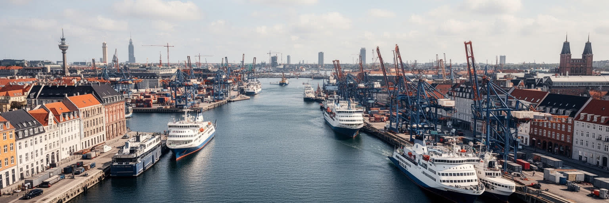
コペンハーゲンは観光の水辺だけでなく、海運と物流の都市です。歴史的にはバルト海交易、海軍、造船、倉庫、税関が港を形作り、現代では海運本社、港湾運営、コンテナ、クルーズ、フェリー、エネルギー関連のサービスが都市経済を支えています。中心部の古い港湾地区は住宅、文化施設、遊歩道へ変わりましたが、港の記憶は岸壁、倉庫、運河、橋の配置に残ります。世界的な海運企業の意思決定は、遠い航路、燃料価格、港湾労働、環境規制、保険、コンテナの流れと結びつきます。市民が見る美しい水面の背後には、船員、港湾作業、通関、整備、清掃、観光船、クルーズ対応の細かな労働があります。港の再開発は都市の魅力を高める一方、住宅価格を押し上げ、働く場所と住む場所を切り離すこともあります。コペンハーゲンの海運を読むことは、北欧の洗練された景観の奥にある、世界貿易と現場労働の接続を読むことです。脱炭素の圧力も港を変えています。燃料、船舶技術、洋上風力、港湾電化、排出規制は、企業の競争力だけでなく、港周辺の空気、騒音、雇用の質にも関わります。港は過去の遺産ではなく、気候時代の産業政策が試される場所です。港が中心から見えにくくなるほど、都市は物流への依存を忘れやすくなります。水辺の快適さは、見えない港湾機能と同時に成立し、港の風やフェリーの音が日常の背景になります。
コペンハーゲンの日常は、北欧福祉国家の制度を具体的に経験する場所です。保育、教育、医療、失業支援、公共交通、公園、図書館、自転車道は、生活を個人の購買力だけに任せない都市基盤として機能します。高い税と強い労働組合、職業訓練、公共部門の雇用は、安心を支える一方で、労働市場への参加を強く求める仕組みでもあります。製薬、バイオ、設計、海運、行政、大学には高技能の仕事が集まりますが、介護、清掃、飲食、建設、配送、ホテル、港湾の仕事も都市を動かします。福祉国家の評判は、窓口で支援を受けられる人だけでなく、支援を届ける人の勤務条件によっても測られます。移民や若者が資格、言語、住居費の壁に直面すれば、平等の制度にも隙間ができます。コペンハーゲンの豊かさは、所得の高さよりも、働けなくなった時、子どもを育てる時、老いる時に都市がどこまで支えるかに表れます。福祉は温かい理念だけでなく、予算、待機時間、職員不足、納税への合意で維持されます。住民が制度を信頼できるかは、保育園の空き、病院の予約、職場復帰の支援、職業訓練の質といった細部で決まります。さらに、公共部門の働き手が疲弊すれば、制度の公平性も揺らぎます。福祉都市を支えるのは、制度を使う住民と、毎日それを運ぶ労働者の双方です。学生、子ども、高齢者が公共施設を自然に使えることも、信頼を労働条件と空間から作ります。
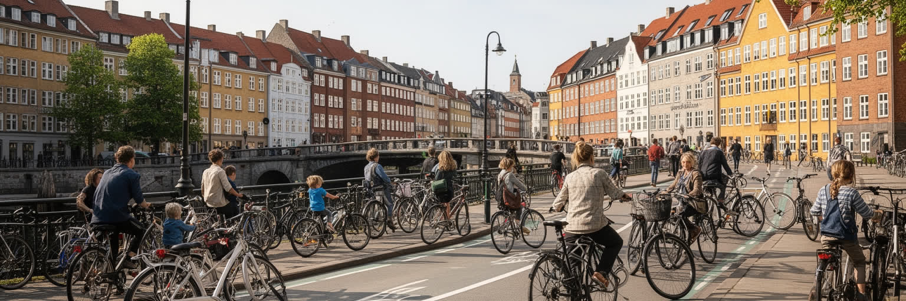
コペンハーゲンの自転車都市という評価は、単に市民が自転車好きだから生まれたものではありません。幅のある自転車道、交差点の信号設計、橋、駐輪、学校や職場への近さ、冬の除雪、車道との分離、公共交通との接続が積み重なって、日常の移動を安全で速いものにしています。自転車は観光の体験である前に、通勤、買い物、保育園の送迎、学生生活、高齢者の外出、週末のランニングや港辺の運動を支える交通です。都市設計の考え方は、広場、水辺、公園、歩道、ベンチ、港の遊泳場にも及びます。人が長く滞在できる場所を増やすことで、車の速度ではなく生活の速度で街を読めるようにしてきました。ただし自転車インフラも完全ではありません。家賃が高くなれば職場の近くに住めず、郊外からの移動は鉄道や車に依存します。観光客が増えると、狭い旧市街では歩行者、自転車、配送車が衝突しやすくなります。設計の成功は美しい写真ではなく、日々使う人の安全と公平で判断されます。この都市の設計から学べるのは、移動の選択肢を増やすには道路の再配分が必要という点です。車のための空間を少しずつ人、自転車、公共交通へ戻すことで、健康、騒音、子どもの自立、店先のにぎわいまで変わります。交通政策は生活文化でもあります。だから自転車道は観光名物ではなく、都市の福祉を支えるインフラでもあります。毎日の安全が価値で、ベルの音や雨上がりの路面も都市感覚になります。
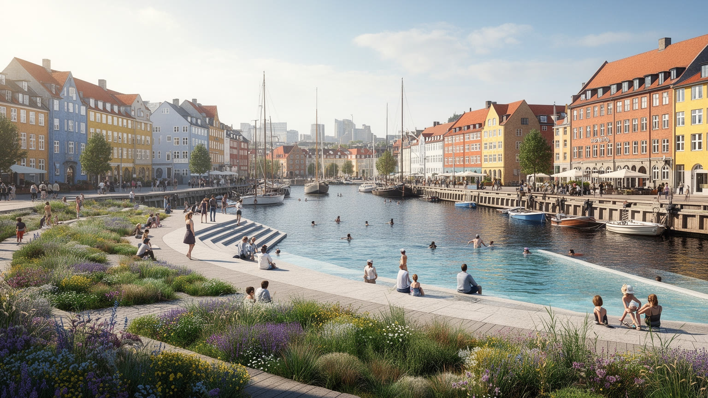
コペンハーゲンは環境都市として語られますが、その中心には気候変動への具体的な備えがあります。海に面した低い土地では、高潮、海面上昇、豪雨、下水の処理、港湾施設の保護が都市計画の大きな課題です。強い雨を一時的に受け止める広場、緑地、透水性のある舗装、雨水を流す街路、公園を組み合わせる設計は、気候対策を日常の景観へ変える試みです。港の水質改善によって市民が泳げる水辺が増えたことも、環境政策と生活文化が結びついた例です。しかし、気候適応は美しい水辺だけでは足りません。古い住宅の断熱、冬のエネルギー費、夏の熱波、地下空間の浸水、社会的に弱い人への避難情報も重要です。環境に配慮した都市であっても、再開発地の住宅が高額になれば、気候に強い場所を使える人が限られます。コペンハーゲンの課題は、脱炭素と防災を、景観の魅力ではなく公共の公平性として実現できるかにあります。気候政策は企業の技術だけでなく、住民の習慣とも結びます。暖房、移動、食、廃棄物、建材、港湾の燃料が変わる時、費用を誰が負担し、恩恵を誰が受けるのかが問われます。環境都市の評価は、その分配まで見て初めて意味を持ちます。雨を受ける公園や広場は、子どもの遊び場であると同時に防災施設でもあります。楽しさと安全が同じ場所で重なり、雨音や海風を受ける広場が防災と余暇を結びます。
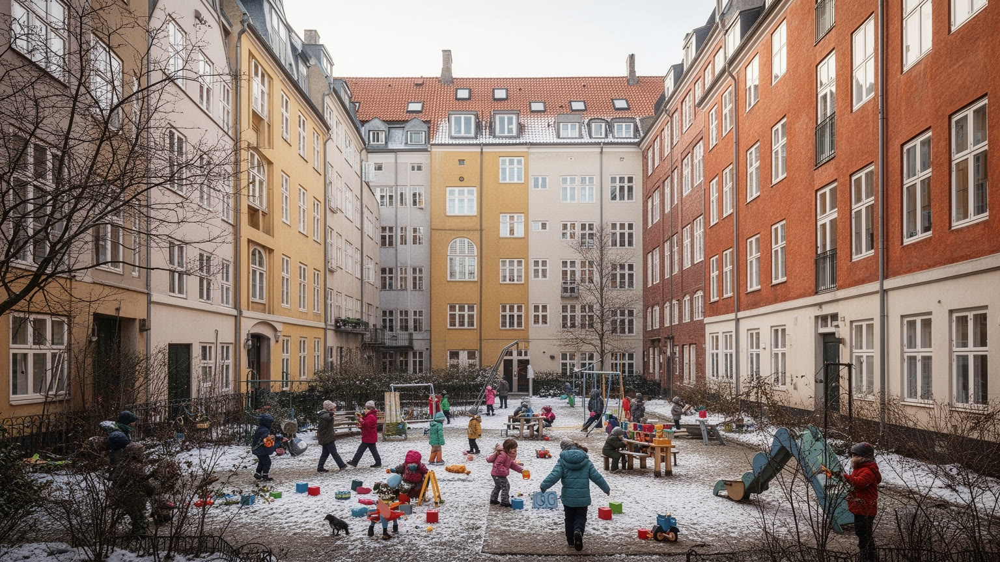
コペンハーゲンは住みやすい都市として知られますが、その住みやすさは住宅費の上昇と緊張しています。中心部や水辺の再開発地では価格が上がり、学生、若い家族、低所得者、移民労働者は広さ、立地、通勤時間をめぐって厳しい選択を迫られます。協同組合住宅、公共住宅、民間賃貸、郊外住宅が混在し、福祉国家の住宅政策は重要な役割を持ちますが、需要の強さは制度だけでは抑えきれません。日常生活は、自転車で保育園へ向かう朝、共同庭のある住宅、冬の暗さ、港の散歩、Torvehallerneなどの市場、学校や図書館、公園で形作られます。小さな都市圏で施設が近いことは大きな利点ですが、誰もがその近さを買えるわけではありません。住宅が不安定になると、職場、学校、地域のつながりも揺らぎます。コペンハーゲンの生活の質を評価するには、カフェや水辺の美しさだけでなく、働く人が中心部や公共交通圏に残れるか、子育てや高齢期を支える住まいがあるかを見る必要があります。冬の暗さや風の強さも生活条件です。室内で集まる場、地域のクラブ、学校、図書館、温かい公共施設、手頃な食堂があることで、季節の厳しさは和らぎます。住みやすさは気候に勝つことではなく、季節を受け止める社会的な場所を持つことです。住宅政策が弱まれば、都市の魅力を支える教師、看護師、調理人、学生が遠ざかります。近さの公平性が問われます。
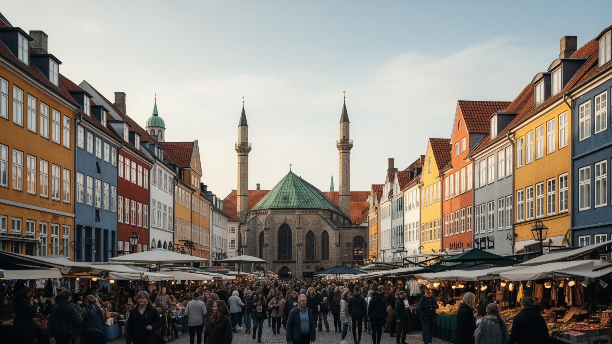
コペンハーゲンの社会を読むには、福祉国家の平等なイメージと、移民をめぐる緊張を同時に見る必要があります。トルコ系、中東系、パキスタン系、バルカン系、アフリカ系、東欧系の住民は、飲食店、介護、清掃、建設、教育、研究、医療、起業を通じて都市を支えています。ルーテル派の教会は国家と歴史的に深く結びますが、モスク、カトリック教会、ユダヤ系の施設、移民の礼拝所も生活の支えです。宗教は観光の建築だけでなく、食、葬送、祝祭、子どもの教育、地域の相談として現れます。一方で、移民地区への視線、住宅政策、学校の分離、言語、就労資格、治安をめぐる政治は、都市の分断を生みます。統合は、移民が一方的に同化することではなく、行政、学校、職場、近隣が互いの違いを扱う仕組みを持つことです。コペンハーゲンの多文化性は派手ではありませんが、福祉国家が誰を市民として支えるのかを問う、重要な都市の現場です。学校での言語支援、職場での差別、宗教上の食、若者の居場所、警察への信頼は、統合を日常で測る指標です。制度が普遍的であるほど、実際には誰が使いにくいのかを細かく見る必要があります。平等は自動的に届くものではありません。近隣の市場やFCコペンハーゲン、ブレンビー戦をめぐるスポーツクラブは、異なる背景の住民が出会う小さな公共圏になります。出会いの場所が少なければ、分断は静かに深まります。
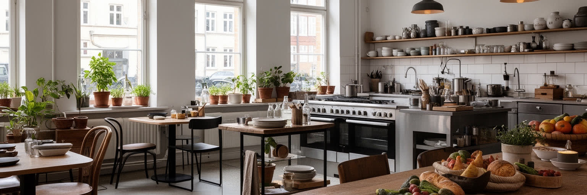
コペンハーゲンの文化的な影響力は、巨大な人口ではなく、デザインと食の密度から生まれます。家具、照明、建築、公共空間の設計は、装飾の豪華さよりも、使いやすさ、素材、光、身体の動きを重視してきました。この姿勢は家庭の椅子や照明だけでなく、学校、図書館、広場、自転車橋、水辺のベンチにも及びます。食文化では、新北欧料理のレストランが世界的に知られ、地元の素材、発酵、季節、海産物、野菜の使い方を更新しました。ただし食の成功は高級店だけではありません。ライ麦パン、スモーブロー、市場、移民の食堂、ビール、学生の食事、港の屋台、コーヒーの香りが日常の味を作ります。観光客が求める洗練は、料理人、農家、漁業、配達、皿洗い、サービス労働に支えられています。デザインと食が都市ブランドになるほど、価格上昇や働き方の問題も見えます。コペンハーゲンの魅力は、簡素で美しい生活像を示す点にありますが、その生活像を誰が実際に享受できるのかも問われます。文化産業は教育や公共投資とも結びます。美術館、デザイン学校、建築事務所、出版社、小さな工房、市場の店、夜の音楽会場が互いに人材を育て、都市の評判を作ります。美しさは商品である前に、使う人を尊重する公共的な考え方でもあります。食と設計の評判が強いほど、台所や工房で働く人の条件も見なければなりません。美意識にも労働の土台があります。
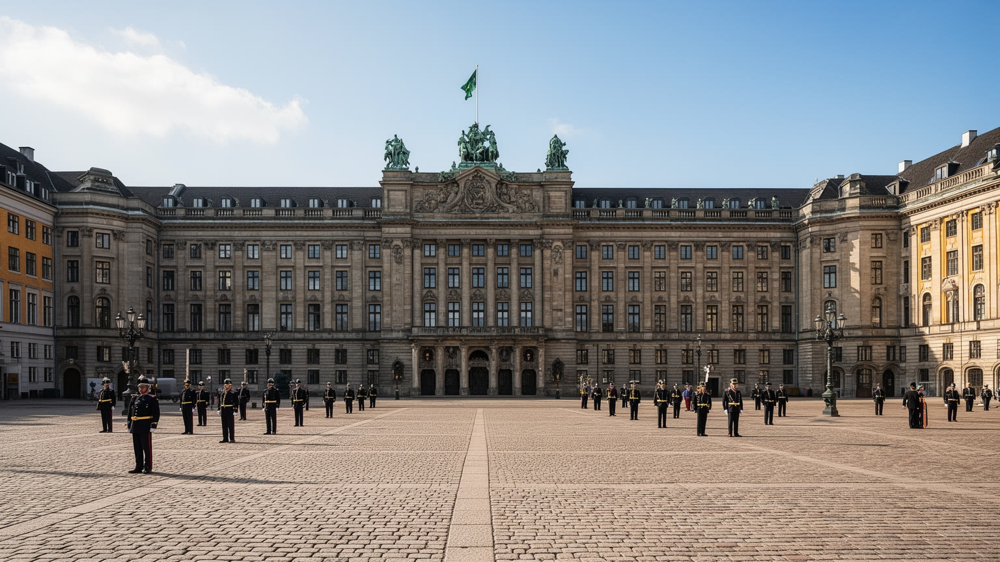
コペンハーゲンでは、王室の儀礼と議会政治が日常の近くに置かれています。アマリエンボー宮殿の衛兵交代、クリスチャンスボー城、フレデリクス教会、旧市街の広場は、観光の名所であると同時に、デンマークの国家像を演出する舞台です。君主制は政治権力そのものではありませんが、式典、祝日、国際訪問、追悼、国民的な出来事を通じて、都市の時間を区切ります。議会政治は、税、福祉、移民、気候、軍事、欧州との関係をめぐる具体的な決定として、市民の生活に影響します。首都の中心で儀礼と議論が近くにあるため、国家は遠い存在ではなく、広場、橋、警備、報道、通勤路として経験されます。王室への親近感と批判、公共サービスへの信頼と不満、移民政策をめぐる対立は、同じ都市空間の中で現れます。コペンハーゲンの政治文化を読むには、穏やかな街並みだけでなく、市民が制度を見守り、時には異議を示す公共空間を見ることが必要です。政治への信頼が高いとされる社会でも、合意は自然に保たれるわけではありません。労働組合、自治体、新聞、放送、学校、市民団体が議論を続けることで、福祉や環境政策への納得が作られます。首都の広場は、その交渉を可視化する場所です。儀礼の静けさと抗議の声が同じ中心部にあることが、この都市の民主政治を立体的にします。近さが政治の緊張も見せます。
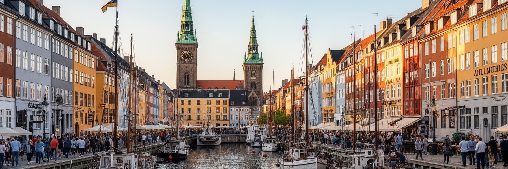
コペンハーゲン観光は、ニューハウンの色彩、王宮、チボリ公園、人魚姫の像、運河ツアー、デザイン店、買い物通り、自転車散策を通じて、港町と北欧生活のイメージを結びます。ローゼンボー城やクリスチャンスボー城は王権の記憶を伝え、古い港や倉庫は交易と海軍の歴史を残します。観光の魅力は、名所が歩ける距離にあり、水辺と広場が休む場所を与える点です。一方で、短期滞在者の増加は住宅、店舗、混雑、価格に影響します。写真に映る静かな水辺は、清掃、交通、宿泊、飲食、警備、ガイド、港湾管理の労働で支えられています。観光都市としての成功は、訪れる人が快適に過ごすことだけではなく、住民が日常の市場、公園、路地、水辺、夜の音楽空間を使い続けられることでも測られます。コペンハーゲンの遺産は、古い建物を保存するだけでなく、港を市民の公共空間へ戻したことにもあります。観光を読むことは、都市が過去をどう見せ、現在の暮らしをどう守るかを読むことです。人魚姫の像や童話の記憶は親しみやすい入口ですが、都市の歴史はそれだけではありません。海軍、植民地交易、労働運動、ユダヤ系住民の記憶、移民の商店街も、観光地図の外側で都市の厚みを作っています。名所をつなぐ散策は、見えにくい歴史へ進む入口でもあります。混雑を分散し、住民の買い物や通学を妨げない運営も観光政策の一部です。
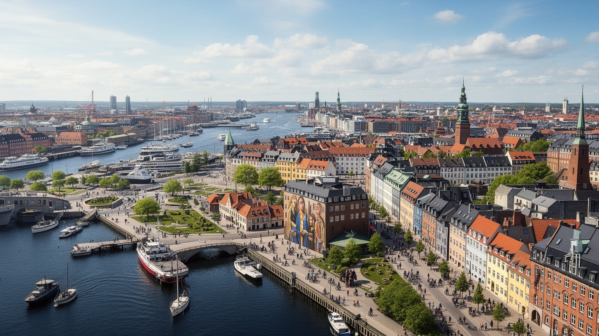
コペンハーゲンは、巨大都市の迫力よりも、制度、設計、生活の近さで重要な都市です。王室と議会、海運本社、製薬企業、大学、港、移民地区、自転車道、公共住宅、水辺の遊泳場、スタジアム、大学地区が、比較的小さな都市圏に重なります。北欧福祉国家の成功を示す一方で、住宅費、移民の統合、公共サービスの負担、観光の集中、気候変動への備えという課題も抱えます。外から見ると整った街に見えますが、その整いは高い税、強い制度、労働者の技能、市民の参加、長年の都市設計によって維持されています。コペンハーゲンを読むことは、住みやすさが自然に生まれるものではなく、政治的な選択の積み重ねであると理解することです。自転車道や水辺の美しさは象徴にすぎません。その背後に、誰が住めるのか、誰が働くのか、誰が福祉を受けられるのか、気候リスクを誰が負うのかという問いがあります。小さな首都だからこそ、都市の成功と矛盾が近い距離で見えます。世界の都市が求める脱炭素、公共空間、健康な移動、社会的包摂は、ここでは完成品ではなく、日々調整される課題として現れます。コペンハーゲンの価値は理想像にあるのではなく、制度と生活を近づけて試行錯誤する姿勢にあります。その姿勢が保たれるかは、快適な景観の裏側にある労働、住宅、移民、気候費用、夜の安全を正面から扱えるかにかかっています。